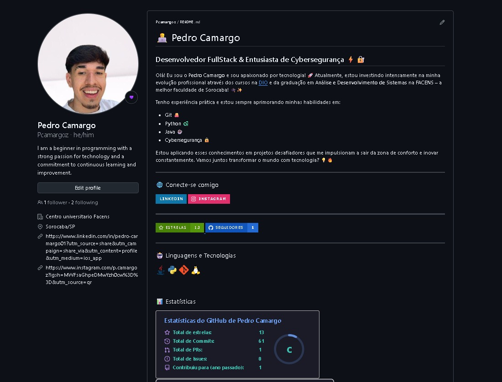
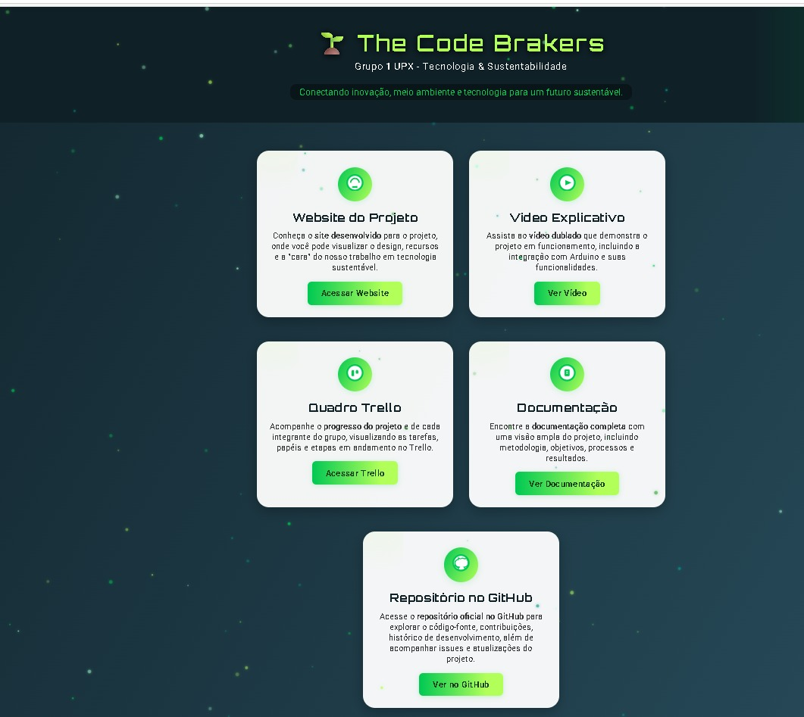
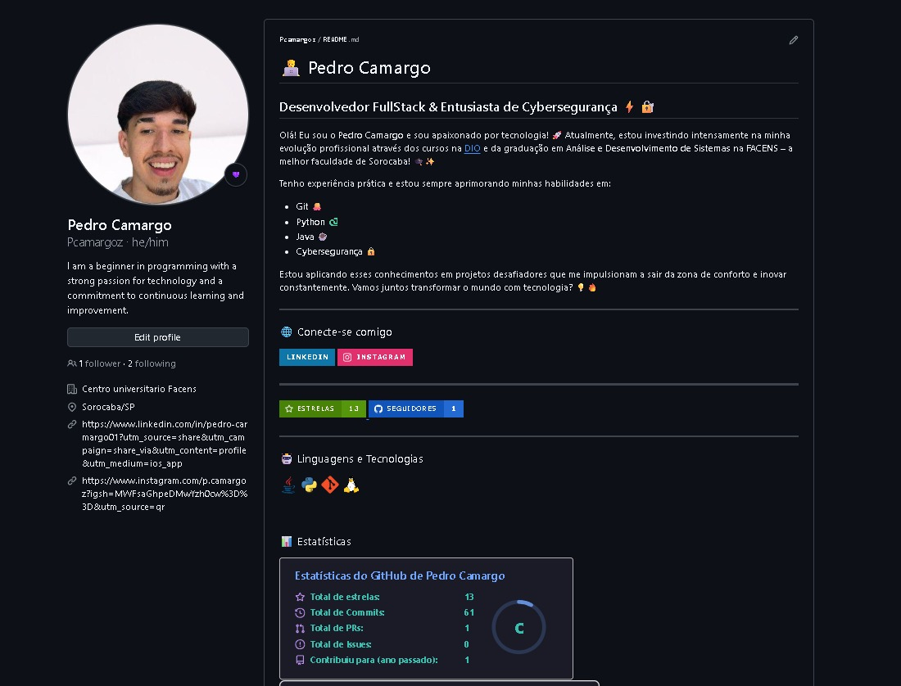
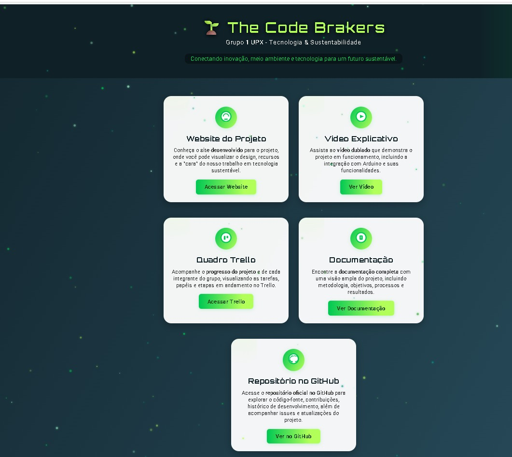

Carta de Apresentação
Minha História de Vida
Desde muito cedo, sempre fui movido por um sentimento de inquietação e vontade de crescer. Meu nome é Pedro Cesar Camargo dos Santos, e minha trajetória até aqui foi marcada por escolhas conscientes, aprendizados constantes e uma busca incansável por evolução pessoal e profissional.
Quando ainda era adolescente, enquanto muitos colegas ainda buscavam se encontrar, eu já entendia que o conhecimento seria a chave para abrir as portas do futuro que eu sonhava: construir uma carreira sólida na área de tecnologia e, principalmente, conquistar uma oportunidade de trabalho no exterior. Por isso, investi meu tempo em cursos que me dessem uma base sólida. Fiz um curso de Inglês Básico e Informática Avançada pela Escola Nippo, com duração de 1 ano e meio, onde desenvolvi minhas primeiras habilidades técnicas. Essa foi a primeira de muitas decisões que tomei com um objetivo claro: estar sempre um passo à frente.
Ao longo do tempo, busquei novas formas de aprender e me desafiar. Fiz cursos de Serviços de Implantação em Nuvem, Desvendando a Blockchain, Empreendedorismo no SENAI Sorocaba e acumulei mais de 100 certificações na plataforma DIO, focadas em linguagens de programação, cloud, inteligência artificial, cibersegurança e desenvolvimento de software.
Hoje, estou cursando Análise e Desenvolvimento de Sistemas no Centro Universitário Facens, reconhecida como a melhor faculdade de tecnologia da região de Sorocaba. Lá, fui escolhido para integrar o time de representantes do curso, o maior da faculdade, com mais de 1200 alunos. Essa função me deu a oportunidade de desenvolver minhas habilidades de comunicação, liderança e organização, além de me aproximar ainda mais do universo acadêmico e tecnológico.
Também lidero o Grupo 01 de Projetos na disciplina UPX, uma matéria que nos desafia a criar soluções para problemas reais, com foco em startups, sustentabilidade, meio ambiente e tecnologia. Essa experiência foi um divisor de águas para mim, pois me deu a experiência prática de trabalhar em equipe, liderar pessoas, gerir prazos e apresentar resultados diante de um público.
Uma das minhas maiores conquistas recentes foi ser selecionado para o Bootcamp Santander Fullstack Developer, após um processo seletivo com vários candidatos. Ganhei uma bolsa de estudos que me permite hoje aprofundar meus conhecimentos em Java Backend e Frontend, com foco especial no desenvolvimento de soluções empresariais.
Minha história de vida é marcada por disciplina, foco e uma determinação enorme em nunca parar de aprender. Encaro cada desafio como uma nova oportunidade de me superar, e estou pronto para dar o próximo passo: entrar no mercado de tecnologia e agregar valor à empresa que confiar no meu potencial.
 



Minhas Expectativas Relacionadas à Formação
Cursar Análise e Desenvolvimento de Sistemas na FACENS, uma das instituições mais renomadas em tecnologia na região de Sorocaba, representa para mim muito mais do que simplesmente obter um diploma. É a realização de uma etapa fundamental na construção de uma carreira que sempre sonhei: trabalhar com tecnologia de ponta e, futuramente, atuar em grandes empresas internacionais.
Minha expectativa com a formação é adquirir uma base técnica sólida nas principais áreas da tecnologia da informação, principalmente em desenvolvimento de software backend, arquitetura de sistemas, banco de dados, cloud computing e cibersegurança, que são temas pelos quais venho demonstrando grande interesse ao longo dos últimos anos. Além disso, quero me aprofundar em metodologias ágeis, práticas de DevOps e boas práticas de versionamento e documentação de código, habilidades cada vez mais exigidas pelo mercado.
Durante o curso, quero continuar desenvolvendo minha capacidade de trabalhar em equipe, resolver problemas de forma criativa e entregar soluções com qualidade e eficiência. Um exemplo claro disso é a minha participação ativa no grupo de representantes do curso, onde aprendi a lidar com a diversidade de opiniões, representar as necessidades dos alunos e buscar soluções junto à coordenação acadêmica.
Outro grande objetivo é participar de projetos práticos e desafios reais, como o que já estou vivendo na disciplina UPX, onde lidero meu grupo na criação de uma startup com foco em sustentabilidade, meio ambiente e tecnologia. Essas experiências me permitem aplicar na prática os conceitos que aprendo em sala de aula e entender de forma mais profunda como funciona o ciclo completo de desenvolvimento de um produto ou serviço tecnológico.
Além disso, minha formação é uma preparação estratégica para conquistar oportunidades como estágios em tecnologia e, futuramente, posições como desenvolvedor backend ou engenheiro de software, áreas onde pretendo construir minha especialização inicial. E, claro, sigo alimentando meu maior sonho: fazer carreira no exterior, em empresas de tecnologia reconhecidas globalmente.
Por isso, meu compromisso durante a graduação é aproveitar ao máximo cada oportunidade de aprendizado, seja dentro da sala de aula, em bootcamps, projetos extracurriculares ou nos diversos cursos online que sigo realizando paralelamente.
Onde Quero Chegar
Meu maior objetivo profissional é construir uma carreira sólida na área de tecnologia da informação, atuando inicialmente como desenvolvedor backend e, com o passar dos anos, evoluir para posições de maior responsabilidade, como arquiteto de software ou engenheiro de soluções cloud. Tenho como meta, no médio e longo prazo, conquistar uma vaga em empresas internacionais de tecnologia, podendo trabalhar em ambientes multiculturais e altamente inovadores, algo que sempre me inspirou.
Me imagino daqui a alguns anos sendo um profissional reconhecido por minha capacidade técnica, minha postura colaborativa e minha dedicação em entregar resultados que façam a diferença. Quero estar envolvido em projetos que impactem milhares de pessoas, desenvolvendo soluções inteligentes, escaláveis e seguras.
Além da parte técnica, tenho o desejo de continuar aprimorando minhas habilidades de liderança e comunicação, que já venho exercitando como representante de curso na FACENS e como líder do meu grupo de projetos na disciplina UPX. Quero ser alguém que inspira outros profissionais ao meu redor, que sabe trabalhar bem em equipe e que contribui ativamente para o crescimento do time.
Minha estratégia para alcançar tudo isso é muito clara e já está em andamento:
- Buscar sempre o aprendizado contínuo, participando de cursos complementares como os mais de 100 cursos que já fiz na plataforma DIO.
- Participar de programas de capacitação de grandes empresas, como o Bootcamp Santander, no qual fui aprovado e que hoje me permite aprofundar meus conhecimentos em Java Backend e Desenvolvimento Fullstack.
- Me envolver com projetos práticos, tanto acadêmicos quanto pessoais, onde posso aplicar o que aprendo de forma real, seja desenvolvendo aplicações, APIs, ou soluções baseadas em nuvem.
- Buscar meu primeiro estágio na área de tecnologia, para colocar em prática tudo que já estudei, aprender com profissionais mais experientes e começar a construir meu histórico profissional dentro da TI.
Acredito que a oportunidade de integrar o time de uma empresa que valorize jovens talentos será o próximo grande passo dessa caminhada. Tenho a consciência de que o início de carreira é um período de muito aprendizado, mas estou totalmente disposto a me dedicar, entregar meu melhor e crescer junto com a organização.
Para mim, cada nova experiência é uma peça fundamental na construção do futuro que desejo: ser um profissional de destaque no mercado global de tecnologia.